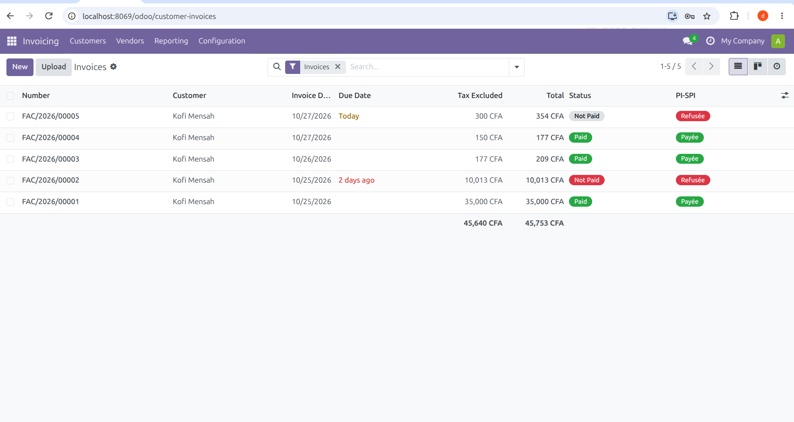
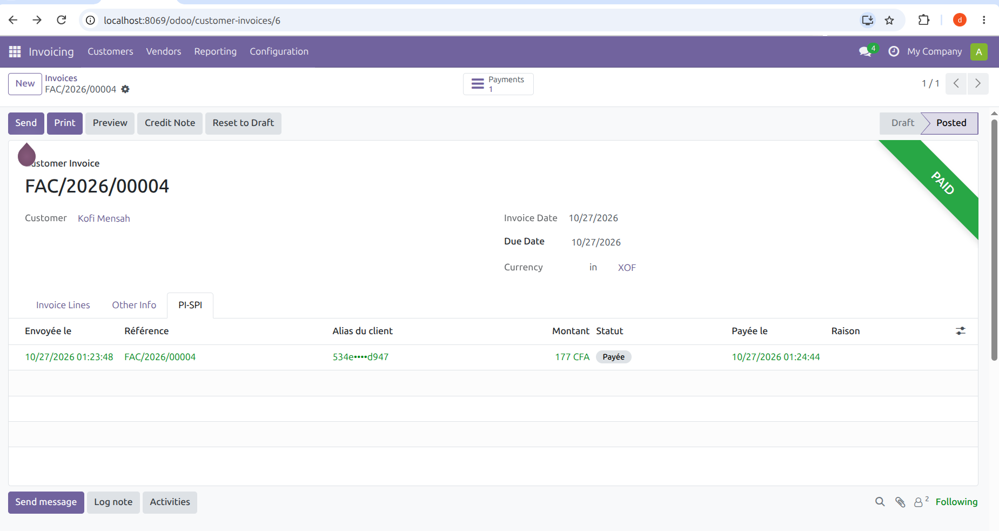
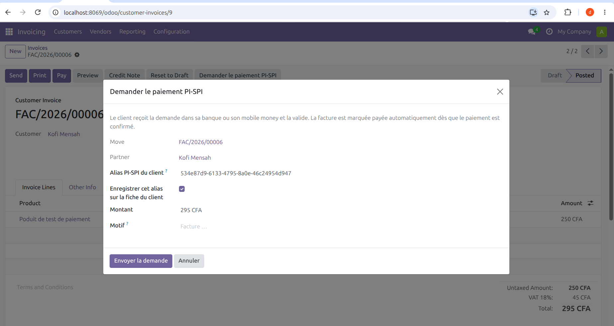
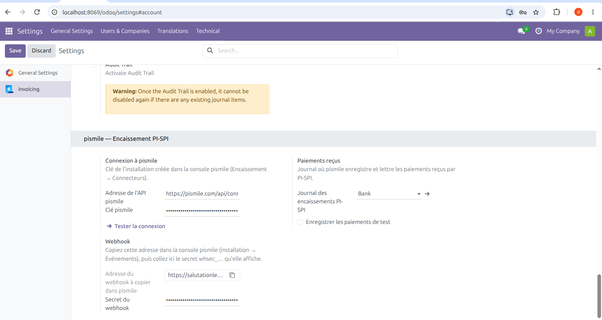

Confirm a customer invoice in XOF as usual, then click Request PI-SPI payment (Demander le paiement PI-SPI).
The request reaches the customer's bank or mobile money app, showing your company name and the invoice number. One tap to pay.
The money lands directly on your own account. Odoo creates the payment in your bank journal and reconciles it with the invoice.
User interface in French, the language of the UEMOA markets this module is built for.
Request a payment from the invoice

Paid and reconciled automatically

All payment requests

Settings

This module connects Odoo to pismile, an external service that sends the payment requests over PI-SPI, the instant payment system of the BCEAO (Central Bank of West African States). You need:
A free test key lets you try every case (paid, refused, expired) without real payments.
Nothing is sent until a user clicks Request PI-SPI payment and confirms. For that request, Odoo sends to pismile: the invoice reference, the amount, the customer's PI-SPI alias and name, the due date, and the internal Odoo invoice and database identifiers (to match the answer). Odoo then reads the status of its own requests. No other data from your database is sent.
The pismile key is stored in your Odoo settings; webhooks are verified with an HMAC-SHA256 signature. pismile privacy policy: pismile.com/confidentialite
The step-by-step guide (in French) is in the pismile documentation: pismile.com/docs/connecteurs/odoo
Write to support@pismile.com. We answer in French and in English.